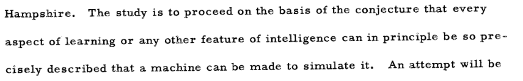

Machine Learning Techniques - 0
Introduction to Artificial Intelligence and Machine Learning
Table of Contents
What is Artificial Intelligence ?
Can Machine Think ?
Turing (1950)
- Defining a machine
- Understanding “thinking”
The Imitation Game
Context:
- A → Man
- B → Woman
- C → Interrogator
Rules:
- Genders of A and B are hidden to C
- C interrogates them
- Responses are typewritten
Objectives:
- For C :
Determine the Gender of A and B
For A : Deceive C
For B : Assist C
What if A is a machine ?
Would C be as often wrong ?
A Modern Experiment: The Imitation Game Revisited
Human or Not? A Gamified Approach to the Turing Test Jannai et al. (2023)
Online 2-player game:
- One player asks questions and must guess “Human” or “Bot”
- The other player responds and might be substituted by a bot
- Bots are advanced LLM models (e.g., GPT-3)
Turing test: Current outcomes
73% Chance to recognize a real person
60% chance to recognize a bot
Ineffective strategies:
- Checking grammar, spelling, recent events
Effective strategies:
- Recognizing known issues and biases
- Identifying hallucinations
Beyond The Turing test

Pionneered Definitions of AI
McCarthy et al. (1955)

“Artificial Intelligence is the science and engineering of making intelligent machines, especially intelligent computer programs.”
From John McCarty (2007). Stanford University.
Artificial Intelligence is “the science of making machines do things that would require intelligence if done by men.”
from Marvin Minsky (1968). MIT Press.
Alternative definitions
Human-oriented
“We call programs intelligent if they exhibit behaviors that would be regarded intelligent if they were exhibited by human beings.” - Herbert Simon
“AI is the attempt to make computers do what people think computers cannot do.” – Douglas Baker
“AI is the study of how to make computers do things at which, at the moment, people are better.” – Elaine Rich and Kevin Knight
Mathematics-oriented
“AI is the study of techniques for solving exponentially hard problems in polynomial time by exploiting knowledge about the problem domain.” – Elaine Rich
“There is no intelligence in AI. It’s just pure mathematical optimization.” – Julia Luc
Intelligence-oriented
“Physicists ask what kind of place this universe is and seek to characterize its behavior systematically. Biologists ask what it means for a physical system to be living. We in AI wonder what kind of information-processing system can ask such questions.” – Avron Barr and Edward Feigenbaum
Levels of AI
- Narrow AI: Specialized in one task. Translation
- Broad AI: Multimodel/Multitask. ChatBot
- General AI (AGI): Can perform any intellectual task that a human can.
- Superintelligent AI: Surpasses human abilities. It’s speculative and doesn’t exist yet.
What is intelligence
Theories of intelligence
- Two factor Theory (Spearmann)
- Multiple Intelligence (Gardner)
- Emotional Intelligence (Goleman)
- Fluid vs. Crystallized Intelligence (Cattell)
What Makes Human Intelligence Unique ?
- Instinct: Innate behaviour Respiration
- Memory: The capacity to recall knowledge and events.
- Learn: The capability to acquire knowledge and skills.
- Logic and Reason: Ability to applies rules of logic to reach conclusions.
- Emotional Intelligence: Recognizing and understanding emotions in oneself and others.
- Abstraction/Concepts: Conceptualizing ideas and making connections between unrelated domains.
- Creativity: Generating novel ideas and solutions.
- An so on …
→ Human intelligence is multifaceted.
Machine Intelligence
- Operates based on algorithms and data.
- Doesn’t “understand” or “feel” in the way humans do.
- Can process information faster and more accurately than humans.
Measuring human intelligence
- IQ Tests
- Complex and contraversary
- Educational exams
- no single definitive method
Measuring Narrow IA intelligence
- Precision / Specificity for classification
- Regression coeficient for regression
- Will be extensively discussed later.
Measuring Artificial General intelligence
- General Tests:
- AI2 Reasoning Challenge
- HellaSwag
- MMLU
- TruthfulQA
- Field-specific Exams:
- University exams (e.g., Bar exam, Math exams)
- Math challenges
→ AGI measurement is closer to human intelligence assessment.
What is Machine Learning?
Definition
Machine Learning is a subset of AI where machines can learn from data.
What is a machine
- Logical model
- Mathematical model
- Theory-driven
- Data-driven
Machine learning vs Human learning
- Machine learn through optimization.
- Numerical optimizations with objective function
- Reinforcement learning
- Genetic algorithms
Optimization can be see widely such as PCA is a optimization to maximize variance.
Major Dates and Periods
- 1950: Turing’s “Computing Machinery and Intelligence”
- 1956: Dartmouth Workshop - Birth of AI
- 1980s: Rise of Expert Systems
- 1990s: Machine Learning Gains Popularity
- 2010s: Deep Learning Era Begins
- 2020s: Emergence of Large Language Models
Conclusion
- Artificial intelligence is a wide concept with multiple definitions
- human-oriented
- mathematic-oriented
- intelligence-centered
- Intelligence is a a wide notion when applied to human.
- Machine intelligence
Objectives
- Definition of Machine Learning
- Mathematics and Statistics
- Implement and train models
- Knowledge and best practices
- Feature engineering
- Model engineering
Planning
25/10 PM
- Part 0 Introduction : – 1h30
- Part 1 Reminders and Foundations – 1h30
- Theory of probability – 30min
- Statistical modelling – 15min
- Model inference – 45min
- Important definitions – 30min
- TP 0 – 1h
- Fitting probability law
- Model selection / Fixed effect (type of errors)
26/10 AM
- TP 1 – 2h
- Data transformation / PCA
- Proof: Cross-entropy from likelihood
- Part 2 Base of Machine Learning 1/2 – 2h
- A: Typology and nommenclatures – 1h
- B: Evaluation metrics – 1h
08/11 PM
- TP 1 – 1h30
- Linear regression with few data
- Linear (logistic) regression with multiple features
- Bias-Variance decomposition of Loss
- Part 2 Base of Machine Learning 1/2 – 30min
- C: Bottlenecks and Issues – 30min
- Part 3 Advanced Machine Learning –2h
- A: Feature engineering – 1h
- B: Model engineering 1/2 – 1h
09/11 AM
- Part 3 Advanced Machine Learning –2h
- B: Model engineering 2/2 – 1h30
- TP 3 – 2h30